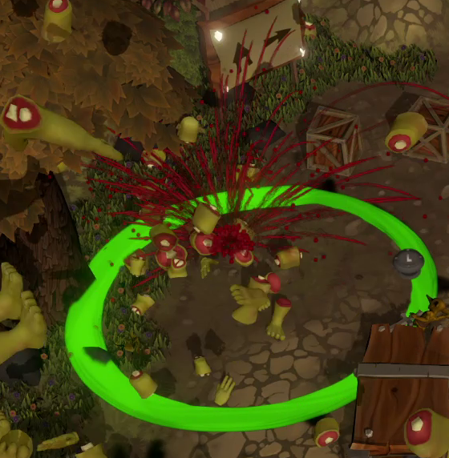

A great war rages! For some reason, the orcs decided to put the two most stupid goblins in charge of the medical tents... Together with a friend you get the opportunity to help or hinder the orcs in their conquest of the human lands!
Goblin doctors was an 8 week project for the course BGP (Big Game Project) at Campus Gotland, where we developed a vertical slice of a concept. The game was developed in Unity 5.6 with a team of 6 people, 4 graphical artists and 2 programmers.
The game is a local multiplayer game for two players. For the vertical slice the goal of the players’ is to “cure” two orcs within a timer. There are three main areas, the “drop off zone” to which the orcs get catapulted, make sure to catch them or they’ll make a mess! The medical tents, where you get to show off your fancy medical skills, including but not limited to: crafting prosthetics, amputating body parts from poor unsuspecting orcs, and attaching prosthetics. Lastly the orc camp, where “cured” orcs are dropped off when they are finished.